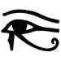
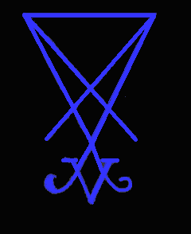

True Satanism is based upon the ancient religions that predated Judaism, Christianity, and Islam by hundreds to thousands of years. The traditional colors of black and red used in Satanism, date all the way back to Ancient Egypt and are symbolic of spiritual transformation. The ancient religions were based upon completing our Creator Satan's work: that of transforming the human soul into that of a god and achieving god-like power and immortality. Satan's Kingdom was stolen from him.
The Judeo/Christian Bible is a corruption of stolen material that has been used to spiritually enslave humanity. All of the legends of the Gods are allegories. The Vatican and its cohorts have gained wealth, power, and control by forcing people to believe these allegories are literal places and characters.
The completion of the work, what is known in alchemy as the "Magnum Opus" has its foundation in the kundalini. The kundalini serpent lies coiled at the base of the spine. Through meditation, the fiery serpent ascends. This is what is known as "Raising the Devil." There are 33 vertebrae in the in the human spinal column. We often hear the term "33rd degree Mason" or that the fictitious nazarene lived 33 years. The kundalini serpent ascends the 33 vertebrae of the spine.
The seven chakras are also very important in the work. When the kundalini ascends, it must pierce through each of the seven chakras. This is why there is so much emphasis on the number seven in many ancient spiritual texts and also what has been corrupted in the Judeo/Christian Bible. Christian leaders mislead their followers through deceiving them into believing the stolen legends in the bible are real. Through this deception, the Vatican and Christian churches have obtained unbelievable wealth and power. This power is not only in the material world, but in the spiritual as well. All spiritual knowledge was systematically removed with the Inquisition. Those at the top are adept at black magick and have advanced to spiritual power, while the rest of humanity suffers under their control.
Many ancient paintings we are told are of the nazarene, "virgin mary" and
related are really of the Original Gods, such as Marduk (Amon Ra) and Astaroth.
The Magnum Opus begins ideally in the spring when the Sun is in Aries, thus the
man standing with the lamb. The halo is the ascended kundalini and the vibrant
aura of witchpower. The Catholic Church stole this and has been passing it off
as their fictitious nazarene. The glyphs for the sign of Aries can be readily
seen in Astaroth's Sigil:
(All of the Demon Sigils are designs of important
alchemical symbols).
The story of the creation in the book of genesis is another allegory: "God' creates the universe in "seven days," "On the seventh day he rested." Those of us who are educated know once the kundalini serpent has ascended through the 6 chakras and passed through the three "knots" (trinity), the seventh is effortless. In truth, "Heaven" is a code word for the seventh chakra. We have all heard the term "Seventh heaven." "God" is a code word for ourselves and also the word "Gods" is a code for the chakras in many ancient texts. "Hell" is a code word for the base chakra, aka "the lower world" where the scorching hot kundalini serpent lies dormant.
The tree in the "Garden of Eden" in the bible was stolen from many different
religions predating Christianity and symbolizes a map of the human soul, the
trunk of the tree representing the human spine, with the branches symbolizing
the "144,000" nadis. "Adam and Eve" symbolize the Ida and the Pingala, where the
two meet and become one. With the ascended kundalini and the fusion of the ida
and pingala at the 6th chakra, gnosis is obtained and one's spiritual eyes are
opened. This was originally symbolized in the Egyptian "All-seeing Eye."

The separated capstone
atop the pyramid symbolizes our Creator Satan's unfinshed work.
The number 12 is also ubiquitous in many ancient texts and also in the stolen material of the bible. The number 12 symbolizes the 12 steps in the magnum opus. These are based upon the 12 signs of the zodiac.
Genesis 1
1 In the beginning God created the heaven and the earth.
The heaven and earth symbolize the crown and base chakras
2 And the earth was without form, and void; and darkness was upon the face
of the deep. And the Spirit of God moved upon the face of the waters.
"Without form and void" represent what is known as the "chaos" stage in the
magnum opus.
4 And God saw the light, that it was good: and God divided the light from
the darkness.
The light is where one creates what is known as the prima
materia, the foundation of the philosopher's stone. This is done by condensing
the bioelectricity/chi into a ball of light.
5 And God called the light Day, and the darkness he called Night. And the
evening and the morning were the first day.
This is a first step and
foundation, thus "the first day."
16 And God made two great lights; the greater light to rule the day, and
the lesser light to rule the night: he made the stars also.
17 And God set
them in the firmament of the heaven to give light upon the earth,
18 And to
rule over the day and over the night, and to divide the light from the darkness:
and God saw that it was good.
19 And the evening and the morning were the
fourth day.
The above verses regarding the "two great lights" symbolize the heart chakra,
where "heaven" and "earth" meet. As we can see in the downward point of Satan's
Sigil, the Satanic Pentagram, and Baphomet, light descends through the crown to
the base chakra.

20 And God said, Let the waters bring forth abundantly the moving creature
that hath life, and fowl that may fly above the earth in the open firmament of
heaven.
"The elixir of life, the blessed waters, penetrate down to them
[the metals/chakras] and rouse them from their sleep." This is what is known as
the "dew" that is secreted by the pineal gland as a result of power meditation.
Birds are also very important symbols in alchemy.
27 So God created man in his own image, in the image of God created he
him; male and female created he them.
31 And God saw every thing that he had
made, and, behold, it was very good. And the evening and the morning were the
sixth day.
From the above, again the ALLEGORY is perverted and twisted. The "sixth day" is the sixth chakra where the male and female ida and pingala meet.
3 And God blessed the seventh day, and sanctified it: because that in it
he had rested from all his work, which God created and made.
Here is
another alchemical allegory that was stolen and twisted. When the alchemist has
completed his/her work, he/she rests. "God" = OURSELVES!
The genesis saga continues, all of it stolen and corrupted from religions predating xianity.
Genesis 3: 3 But of the fruit of the tree which is in the midst of the garden, God hath said, Ye shall not eat of it, neither shall ye touch it, lest ye die.
There is the stage in alchemy where one undergoes a death of the prima materia. This is known as "nigredo" "black stage."
- "The initial, black stage of the opus alchymicum in which the body of the impure metal, the matter of the Stone, or the old outmoded state of being is killed, putrefied and dissolved into the original substance of the creation, the prima materia, in order that it may be renovated and reborn in a new form."¹
Here is where the fictitious nazarene was also invented. The nazarene was stolen from some 18+ Pagan Gods who were "crucified" on a cross or hung from a tree. All of this is an allegory, for example: The Norse God Odin hung from a tree and experienced a death of sorts to obtain knowledge. Through being reborn, he obtained gnosis. The cross represents the all-important four quarters. This is also the meaning of the hanged man card in the Tarot. The Egyptian phoenix has the same meaning- rebirth through fire. The eclipse said to have occurred during the supposed "crucifixion" of the nazarene also symbolizes the nigredo stage of blackness. This stage is also symbolized by the black crow and the Black Sun.
4 And the serpent said unto the woman, Ye shall not surely die:
The kundalini serpent transforms, but does not kill.
5 For God doth know that in the day ye eat thereof, then your eyes shall
be opened, and ye shall be as gods, knowing good and evil.
This is the
gnosis that the Christian Churches and their nefarious cohorts have relentlessly
worked against. Once our eyes have been opened, we can no longer be deceived by
ANY lies!
7 And the eyes of them both were opened, and they knew that they were
naked; and they sewed fig leaves together, and made themselves aprons.
Nakedness is another allegory of rebirth. Everyone is born naked.
Now, we get to "Noah" and the ark, which was stolen from the Sumerian epic of Ziusudra.
- "Noah's flood is a symbol for the 'dissolution of the Stone's matter into the prima materia during the nigredo. At this stage of the opus, the cold, moist, feminine principle (Luna) is said to dominate the hot, dry coagulating male aspect of the opus (Sol)." ²
The water element is feminine, while the fire element is masculine. This stage of the opus is symbolized by a flood of energy which is symbolized by the flood of waters. The flood is another allegory of death and regeneration. The ark itself is symbolic of the human body. The allegory of the crow not returning to the ark is symbolic of the stage is not yet completed. The "dove" symbolizes the white stage aka the "albedo."
- "The albedo occurs after the blackened matter, the putrefied body of the metal or the matter for the stone, lying dead at the bottom of the alembic, has been washed to whiteness by the mercurial waters." ³
It is readily apparent how this allegory has been corrupted into an assumed actual event, complete with characters.
4 And the ark rested in the seventh month, on the seventeenth day of the
month, upon the mountains of Ararat.
AGAIN, the number seven and "rest."
This symbolizes the seventh chakra, which is effortless bliss and the "
mountains of Ararat" symbolize the completed work, which was STOLEN from the
meaning of the Egyptian pyramids- the apex point at the top which has its
foundation at the four quarters.
Now, I might also add here- to the fools who have been attacking
Enili/Beelzebub with drowning humanity- GET A LIFE!!!!
Knowledge comes from
Satan.
13 I do set my bow in the cloud, and it shall be for a token of a covenant
between me and the earth.
14 And it shall come to pass, when I bring a cloud
over the earth, that the bow shall be seen in the cloud:
15 And I will
remember my covenant, which is between me and you and every living creature of
all flesh; and the waters shall no more become a flood to destroy all flesh.
The "bow" is the rainbow, the iridescent colors that indicate another higher stage of the magnum opus has been completed. THIS STAGE, I MIGHT ADD IS ALSO SYMBOLIZED BY THE PEACOCK. THE PEACOCK IS A SYMBOL OF AND IS SACRED TO SATAN!
Verse 13 reads: "a covenant between me and the earth." "God" is another alchemical code word for the crown chakra, aka "heaven" (the top three chakras are also symbolic of 'heaven') "paradise" "bliss" and the earth is the lower world, symbolized by the three lower chakras. This indicates "heaven" and earth have been merged at the heart chakra.
The following biblical books are the fictitious history of the Jewish people. The "torah" was STOLEN and corrupted from the Egyptian Tarot. The "Torah" is also known as the "Pentateuch," the five books of "Moses" (another fictitious character). One can see this was stolen from the five suits of the Tarot- the wands/rods (suit of fire); the pentacles (suit of earth); the cups (suit of water); and the swords (suit of air) and of course the trump, representing the element of the quintessence.
- "The nigredo stage ends on the surface of a starry aspect, which is likened to the night sky which told shepherds and kings that a child was born in Bethlehem." 4
AGAIN, this is symbolic and indicates another stage of the work, when one can 'see' the light of the chi stone in the black void, when one's eyes are closed, during meditation. The "three" magi represent the three stages of the work. The fictitious nazarene- the stone (which was born from the work).
- "There are three stones, or three works, or three degrees of perfection, within the work." 5
Here we go again with twisted allegories in relation to that fictitious nazarene – the "crucifixion" – two others were crucified with the nazarene, making three.
I could go on and on and on, citing biblical verses and revealing how they were stolen and corrupted. The character of the nazarene, which was invented from an allegory has:
1. Acted to remove all spiritual knowledge and replace it with bullshit. The "Jesus saves" crap (ad nauseum) and the "born again" have been twisted and incorporated into this fictitious character. in other words, deluded ones have been deceived into believing this character will take care of everything spiritual as long as they conform to the agenda.
2. The "Jesus" character has acted as the thought police for ultimate control. Wars have been fought repeatedly over beliefs and ideas. Control what is in the mind of humanity and you will control humanity.
3. Since the nazarene is fictitious, he can be anything to anyone which those in powerful positions in the xian program dictate. He can change with the times and conform to any agenda.
It is time everyone wakes up to the spiritual corruption that has played humanity to the tune of trillions and trillions of dollars, souls and everything else these parasites have taken their followers for a ride with.
References
¹A Dictionary of Alchemical Imagery by Lyndy Abraham © 1998
²Ibid
³Ibid
4The Hermetic Museum: Alchemy & Mysticism by
Alexander Roob © 2001
5Alchemy: The Secret Art by Stanislas
Klossowski De Rola © 1973
Le Mystère des Cathédrales by Fulcanelli © 1964
© Copyright 2006, Joy of Satan Ministries;
Library of Congress Number:
12-16457